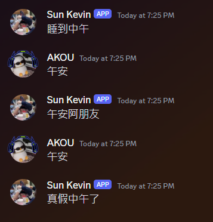

DiscordBot是一種聊天機器人，使用者可以將機器人加入自己的Discord群組，並且透過機器人實現許多不同的自動化功能。
Discord的機器人支援Javascript及Python來編寫，本次所使用的語言為Python。
目前市面上常見的機器人有:音樂機器人、統計機器人、即時顯示機器人等等，機器人可以搭配Python的各種套件，來實現各式各樣的功能。
DiscordBot是一種聊天機器人，使用者可以將機器人加入自己的Discord群組，並且透過機器人實現許多不同的自動化功能。
Discord的機器人支援Javascript及Python來編寫，本次所使用的語言為Python。
目前市面上常見的機器人有:音樂機器人、統計機器人、即時顯示機器人等等，機器人可以搭配Python的各種套件，來實現各式各樣的功能。
要使用Python撰寫一台Discord機器人，需要先到 Discord developer Portal 註冊一台機器人，註冊完成後將會獲得一組金鑰。
再來需要在Terminal使用Pip安裝Discord套件:
pip install discord
接下來就是建立一個Python檔案，輸入下列程式就可以順利連接上剛才註冊好的機器人。
import discord
intent = discord.Intents.all()
intent.message_content = True
bot = commands.Bot(command_prefix="$",intents=intent)
intent.run("TOKEN")
Cog架構簡單來說就是將不同功能分散到不同的.py執行檔中，並且在機器人的主程式中指定特定資料夾內的執行檔並載入。
這樣做的目的是在未來管理各項功能會比較方便，不管是上架新功能，或是要下架舊的功能，不需要去動主程式，只需要新增或移除Cog資料夾內的執行檔即可。
要實現這功能，需要在主要的執行檔bot.py中新增以下程式:
import os
async def load_extension():
for file in os.listdir("Cog資料夾路徑"):
if(file.endswith(".py")):
print(f"載入檔案:{file}..")
await bot.load_extension(f"cogs.{file[:-3]}")
async def main():
async with bot:
await load_extension()
await bot.start("TOKEN")
接著在各功能的獨立執行檔中新增以下這段:
from discord.ext import commands
class Example(commands. Cog):
def __init__(self,bot:commands.Bot):
self.bot = bot
async def setup(bot:commands.Bot):
await bot.add_cog(Example(bot))
Listener直接翻譯就是聆聽者，他的功能就是監看聊天室的訊息，只要抓到特定的詞語，就會觸發事件。
在增加任何事件前，為了避免機器人讀取到自己的訊息並進入無窮迴圈，必須先加入判斷，避免讀取自己發出的訊息。
if message.author == self.bot.user:
return
舉一個例子，當使用者輸入【早安】，機器人就會回覆【早安馬卡巴卡】。
@commands.Cog.listener()
async def on_message(self,message:discord.Message):
if message. Content == "早安":
await message.channel.send("早安馬卡巴卡")
圖片範例:

也能夠偵測機器人是否被@提及，若被提及則觸發事件。
@commands.Cog.listener()
async def on_message(self,message:discord.Message):
if self.bot.user in message.mentions:
await message.channel.send("?")
圖片範例:

斜線指令(Slash Command)為Discord的一項新功能，能讓機器人透過/指令來執行特定的功能。
範例中，name為這個指令的名稱，description為指令的解釋，可以讓使用者了解這個指令的功能。
使用者輸入/hello即可觸發此事件。
@app_commands.command(name="hello",description="hello world")
async def hello(self, interaction:discord.Interaction):
await interaction.response.send_message("Hello there!")
圖片範例:

DiscordBot可以針對特定的字詞作出指定動作，比如執行指令或是回傳數值或字串。
因此，可以透過這個方式來實現回覆訊息的功能，讓使用者和機器人對話，本次將使用Json檔，透過Request的方式來取得回覆內容。
為何要使用Request來取得回覆的腳本?不能直接寫在程式內嗎? 答案是可以，但若是要新增新詞彙，就需要去更新原代碼，相對來說比較麻煩。
但若是透過外部的Json檔來提供詞彙，就可以直接更新Json檔，即可實現新增或刪除詞彙的功能，會省事很多。
要使用Python的Request功能，必須先Import Request
import requests
再來就是建立一個Json檔案並且放置在本地或是雲端，這次的範例會把文件放置在github.io網域上
Json範例:
{
"午安": "午安阿朋友,下午好,真假中午了,我剛起床,睡到中午",
"晚安": "幾點了,我先睡了晚安,：),晚安好晚上好,ZZZzz.."
}
在Python部分讀取Json文件:
json_data = requests.get("https://EXAMPLE.github.io/TEST.json")
data = json.loads(json_data.text)
再來就是讀取使用者輸入內容，判斷是否有指定詞彙，若有則從內容中挑選一個做回覆。
msg = message.content
if(msg in data):
lst = str(data[msg]).split(',')
await message.channel.send(lst[random.randrange(0,len(lst))])
這個範例中，首先先判斷使用者訊息 msg，若data內有這個詞彙，就將data中對應msg的內容取出轉換成list。
在這邊使用split功能，因為在我們的Json檔案中是使用 "," 來分隔回覆內容，所以我們可以透過split(',')來將字串分割成list。
當內容轉成list後，就可以透過await來執行回覆動作，回覆的內容則是list中隨機挑選一個。
所以可以使用 random.randrange(0,len(lst)) 挑選從0 ~ 陣列長度的內容。
以下為實際效果:
除了基本回訊息功能，也可以透過DiscordBot快速的查詢股票資訊，可以透過之前的斜線指令來實現這個功能。
這一次會使用到第三方的twstock套件，寫程式之前必須先安裝套件:
pip install twstock
再來就是導入套件到Python中:
import twstock
from twstock.realtime import get
再來就是宣告參數，這邊我使用了兩種取得方式，兩種都可以，我會使用兩個是因為第一個是獲取即時訊息，第二個是獲取完整資訊，num的部分則為股票代號，如台積電為 '2330'
#初始化
stock = get(num)
stock_price = twstock.Stock(num)
再來獲取到的參數可以分為兩部分，股票資訊和及時價格
#讀取資料
sinfo = stock['info']
price = stock['realtime']
再來是判斷股票的漲幅，因為我們獲取的參數沒有直接提供漲跌金額和幅度，所以必續自己計算
範例中是抓取昨日收盤價及現在的價格來運算，因此使用到第二個參數stock_price
#是否上漲
gap = stock_price.price[-1] - stock_price.price[-2] #漲跌
percent = stock_price.price[-1] / stock_price.price[-2] #漲幅
再來就是可以透過這些設定好的資料去做查詢了，以下是各式資訊的對應名稱:
price['latest_trade_price'] #成交價
price['high'] #最高價
price['low'] #最低價
price['open'] #開盤價
sinfo['time'] #成交日期
以下為實際的效果:
透過判斷漲幅上漲或下跌，可以給予相對顏色，讓使用者更快速判斷今日股市狀況。